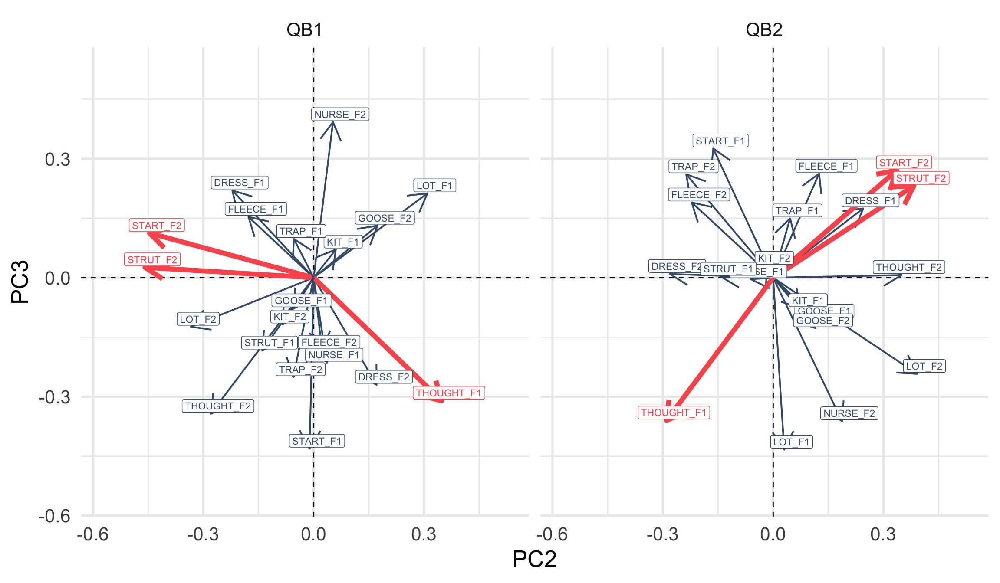
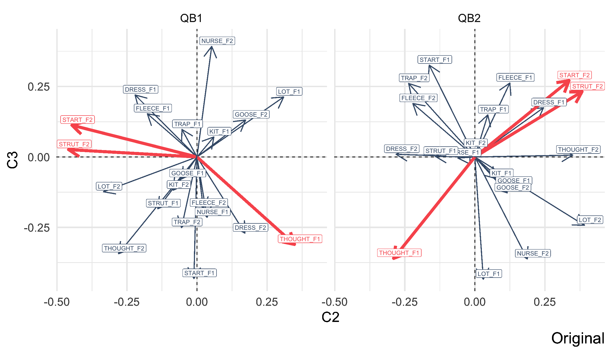
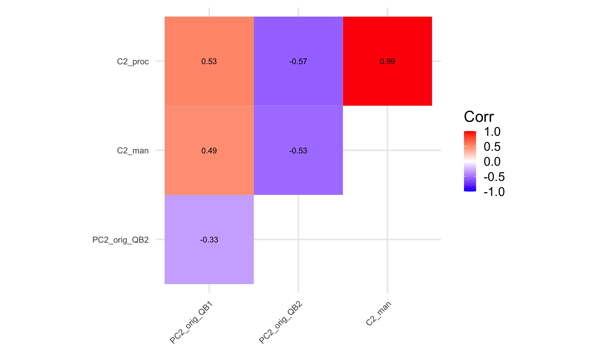
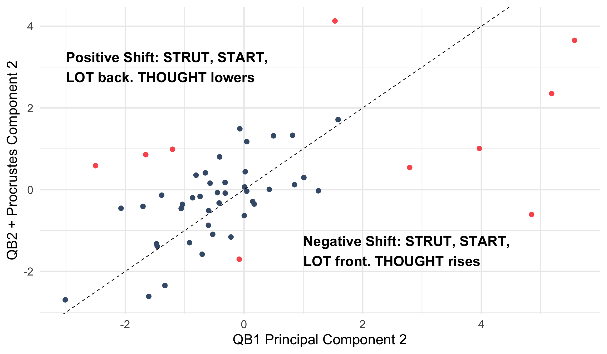

Rotating Principal Components to explore change over the lifespan in New Zealand English monophthongs
Elena Sheard & Joshua Wilson Black
Te Kāhui Roro Reo | New Zealand Institute of Language, Brain and Behaviour
Te Whare Wānanga o Waitaha | University of Canterbury
Methods in Dialectology, July 4
Background
- QuakeBox 1 (2011-2012) and QuakeBox 2 (2020-2021) contain monologues from the same speakers (n=51).
- Two questions:
- Are the patterns of covariation similar?
- Do speakers change their position with respect to these patterns?
- Yes to (1): Hurring et al. (Under review)
- Yes to (2): Sheard and Wilson Black (2023)
- Methodological challenge: compare PCA across datasets.
Overview
- When is PCA unstable?
- Rotating and Scaling PCs
- Manual rotation
- Procrustes rotation
- Change over the life span in QuakeBox.
PCA Instability
PCA Instability
- Small changes in data → big changes in PCs.
- Outlier sensitivity.
- Competing patterns of covariation:
- PC2 in one sample might be PC3 in another.
- Axis flipping.
- Direction along a PC is arbitrary.
Competing PCs in QB2
Overlap in variance explained.
PC2 and PC3 are unstable.
QB2 Instability

Comparing QB1 and QB2

We can flip.
But can we rotate?
PCA Rotation
Rotating PCs
- Rotation is a technique from Factor Analysis.
- Why?
- Increase ‘interpretability’ (Jolliffe 2002)
- Compare across analyses
- Rotated components are no longer “PCs”
- They don’t maximise variance explained.
- But the ‘space’ is maintained.
- Call this PCA + rotation.
How to Rotate?
- Manual rotation
- Decide where you want an arrow to go,
- work out the required angle,
- rotate.
- Procrustes rotation
- Rotate (and scale) to minimise sum of squared differences with reference shape.
For ‘interpretability’, other methods are used.
Manual Rotation
British Museum, CC BY 2.5, Wikimedia Commons
Procrustes Rotation
- Procrustes rotation stretches and rotates the traveller to fit the bed.
- The bed: the first PCA (QB1).
- The traveller: the second PCA (QB2).
- i.e., it minimises the overall difference between shapes.
- It is commonly used in community ecology (Peres-Neto and Jackson 2001)
- We use the
procrustes()function from theveganpackage.
- We use the
Procrustes Rotation (cont.)
- Applied to the first \(n\) PCs (your \(n\) may vary!).
- Less arbitrary than manual rotation.
Procrustes Rotation (cont.)
Change Over the Lifespan
(In)Stability (PC1)
(In)Stability (PC2)
Shifting Speakers
What is PC2, Anyway?
- QB1: PC2 is dominated by start F2, strut F2, and thought F1.
- Positive PC2 = Backer start /strut (and lot), lower thought
- Negative PC2 = Fronter start /strut (and lot), higher thought
- Does weaker correlation (compared to PC1) suggest instability in the back vowels for some individuals?
- Return to the original data!
See Brand et al. (2021), where this relationship is captured by PC1.
Who is Shifting?
- We identified the ten speakers who have the largest difference between QB1 PC2 and QB2 + Procrustes rotation:
- 8 women, 3 Māori, 18-35 (n=2), 36-55 (n=7), 56-65 (n=1)
- We explore their back vowel midpoints (n = 3581)
- thought, lot, strut and start.
Who is Shifting? (cont.)
Vowel Space Analysis

Vowel Space Analysis (cont.)
- Speakers with QB1 → QB2 score increase (positive shift):
- Higher/backer thought, fronter lot, start, strut
- 3 Māori, all 35+
- Speakers with QB1 → QB2 score decrease (negative shift):
- Lower/fronter thought, backer lot, start, strut
- Non-Māori, 2 18-35.
- Consistent with broader Positive/Negative PC loading patterns
Conclusions
- PCA validated as:
- A means of tracking vocalic covariation in the community
- A diagnostic for changes over the lifespan across covarying vowels
- Importance of moving between PCA and original data.
- Language change over the lifespan can encompass changing relationships within the vowel space
- Rotation in an important part of the PCA tool kit.
References
Brand, James, Jen Hay, Lynn Clark, Kevin Watson, and Márton Sóskuthy. 2021. “Systematic Co-Variation of Monophthongs Across Speakers of New Zealand English.” Journal Article. Journal of Phonetics 88: 101096.
Hurring, Gia, Joshua Wilson Black, Jen Hay, and Lynn Clark. Under review. “How Stable Are Patterns of Covariation Across Time?” Under review.
Jolliffe, Ian T. 2002. Principal Component Analysis. Springer.
Peres-Neto, Pedro R., and Donald A. Jackson. 2001. “How Well Do Multivariate Data Sets Match? The Advantages of a Procrustean Superimposition Approach over the Mantel Test.” Oecologia 129 (2): 169–78. https://doi.org/10.1007/s004420100720.
Sheard, Elena, and Joshua Wilson Black. 2023. “Change over the Lifespan Across Covarying New Zealand English Monophthongs.” Presented at the Annual Conference of the Australian Linguistic Society.
Appendix: data and models
- 51 speakers
- Satisfy data quantity and quality filtering steps at both recording points
- Generalised Additive Mixed Models (GAMMs) fit for F1 and F2 of same 10 monophthongs
- kit, dress, trap, fleece, nurse, goose, thought, lot, strut and start
- n = 22529 (QB1), 43403 (QB2)
- Gender, age (at QB1), and articulation rate as predictors